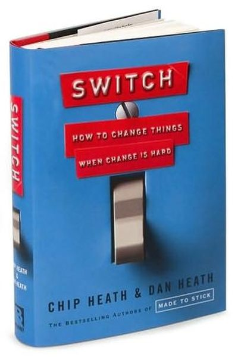

Library › Psychology & People
Switch — Summary & Key Lessons

How to change things when change is hard — the Rider, the Elephant and the Path.
📖 OPEN THE FULL INTERACTIVE BREAKDOWN →🌐 Read it in Hindi, Hinglish, Gujarati, Tamil & 22 more languages — free, with audio.
💡 The Big Idea
The Heath brothers' framework for change: your mind has two systems — the Rider (rational, analytical) and the Elephant (emotional, instinctive). When they disagree, the Elephant wins. Change fails when we only give the Rider a plan (analysis paralysis) or only appeal to the Elephant (short-term motivation). The formula: direct the Rider (give crystal-clear direction), motivate the Elephant (make it feel — find the feeling, shrink the change), and shape the Path (change the environment so change is easier). This works for personal change, team change and organizational change alike.
🧠 The 8 Key Lessons
Lesson 1: The Rider, the Elephant, and the Path
The Problem
The Rider is your rational planner; the Elephant is your emotional engine. The Rider gets exhausted holding the reins — that's 'decision fatigue'. The Elephant needs motivation and gets spooked by big scary goals. And both travel on a Path — the environment. Change any change by working all three.
📖 Example: Dieting fails when the Rider plans perfectly but the Elephant (craving) wins at 10 PM — and the kitchen is full of chips (the path). Change the path and the Elephant never gets tempted. Read the full example →
⚡ Do this: For your current change, diagnose all three: what's unclear (Rider), what feels unmotivating (Elephant), what's in the way (Path)?
Lesson 2: Direct the Rider: Find the Bright Spots
Direct the Rider
When a problem looks overwhelming, look for what's already working — bright spots — and clone it. The Rider gets paralyzed by big problems; concrete examples of success give it direction. Instead of analyzing the failure, study the exception.
📖 Example: In the malnutrition study the Heaths describe, researchers found some villages had well-fed kids despite the same poverty — and cloned those mothers' small behaviors, solving a problem big programs had failed at. Read the full example →
⚡ Do this: Find your bright spot: where is this change already working, even a little? Study it and clone one behavior.
Lesson 3: Script the Critical Moves
Direct the Rider
Ambiguity is the Rider's kryptonite. Vague goals ('be healthier', 'improve service') invite analysis and paralysis. Script the critical moves in specific behavioral terms: 'switch to whole milk', 'greet every customer within 5 seconds'. Specific is actionable.
📖 Example: A company that wanted 'great customer service' achieved it only when they scripted one move: every customer is greeted by name within ten feet. Simple, specific, repeatable. The Health brothers' example: a hospital reduced medication errors by scripting… Read the full example →
⚡ Do this: Rewrite your goal as one specific behavior with a number: '___ within ___ minutes', '___ times per week'.
Lesson 4: Motivate the Elephant: Find the Feeling
Motivate the Elephant
The Elephant moves on feeling, not facts. Knowing something is wrong rarely changes behavior — feeling it does. To spark change, shrink the problem to something emotionally vivid: show one person's story, not a spreadsheet. Knowledge is not enough; make it feel.
📖 Example: The 'one child's story' in charity appeals outperforms statistics — because a single vivid story moves the Elephant where data can't. The same applies to teams: make the customer real. Read the full example →
⚡ Do this: Make your change feel real: find the one person (customer, user, yourself in 5 years) whose story makes the change urgent.
Lesson 5: Shrink the Change: Make It Tiny
Motivate the Elephant
Big goals spook the Elephant. Break the change into steps small enough that the Elephant can't refuse: 'clean one room', 'write 5 minutes', 'make one call'. Small wins create the feeling of progress — and progress is the Elephant's fuel.
📖 Example: The 'one load of laundry' technique for a depressed person, or 'write one sentence' for a blocked writer — tiny starts that grow because the Elephant feels momentum. Instead of 'lose 20 kilos', they recommend 'eat one vegetable at dinner' — the change is so… Read the full example →
⚡ Do this: Shrink your change to a step so small it feels almost silly. Do that step today and celebrate the win.
Lesson 6: Shape the Path: Change the Environment
Shape the Path
The easiest lever is the environment: defaults, distance, design. If the path is easier, behavior follows with less willpower. Change what's visible, what's default, and what's convenient — and you change what people (and you) do.
📖 Example: Recycling doubled when bins were placed next to desks; fruit sales jumped when fruit moved to eye level; savings increased when enrollment became the default. The path did the changing. The famous 'popcorn and candy' experiment: when a cinema gave free… Read the full example →
⚡ Do this: Redesign one environment today: make the good choice the default, the visible choice, and the convenient choice.
Lesson 7: Rally the Herd: Build Momentum
Shape the Path
Behavior is contagious. People look to others to decide what's normal — so make the new behavior visible and celebrated. Leaders go first, early adopters are showcased, and the 'herd' follows. Social proof turns individual change into movement.
📖 Example: Hotels' 'most guests reuse their towels' message outperformed generic appeals — because it told people the herd was already doing it. Show the new behavior as the norm. They describe a school where attendance improved when the principal started publicly… Read the full example →
⚡ Do this: Make your change visible to others: announce it, share a win, recruit one ally. Let the herd see the new default.
Lesson 8: Keep the Switch Going: Instill Habits
Make the Switch
Change sticks when it becomes habit — automatic behavior that no longer needs the Rider or the Elephant. Build action triggers ('when X, I do Y'), make the first steps effortless, and celebrate progress to keep the Elephant happy while the habit forms.
📖 Example: The Heaths describe how 'action triggers' double follow-through: people who wrote 'when I finish lunch, I'll call my mother' actually called — the trigger removed the decision. The brothers' final example: a company that made its safety training a weekly… Read the full example →
⚡ Do this: Turn one new behavior into an action trigger: 'When [existing habit], I will [new behavior]'. Write it down and post it.
✅ 5-Step Action Plan
- Diagnose Rider, Elephant and Path for your change.
- Find and clone one bright spot.
- Script one specific critical move.
- Make the change feel real with one human story.
- Shrink the change to a tiny step — then shape the environment and rally the herd.
⚠️ When This Doesn't Work
The Heath brothers' 'rider, elephant, path' framework is elegant — and Borders had all three: clear direction from brilliant leaders, motivated booksellers, and a beautifully designed path. They still handed the digital future to Amazon, because the path's incentives (store bonuses, real-estate leases) all pointed to the old route. Changing behaviour isn't just about the framework; it's about who controls the path and what they're paid to preserve. If the people who'd lose from the change hold the map, your switch will fail no matter how well-designed it is.
💀 The Graveyard Proves It
📚 Borders Books — The Bookstore That Outsourced Its Website... to Amazon. Burn: 511 stores, 19,500 jobs, the whole chain. Read the full case study →
💬 Best Quotes from Switch
- “What looks like a people problem is often a situation problem.”
- “To change behavior, you've got to shape the path.”
- “Big changes start with small steps — shrink the change.”
Interactive version: mark lessons as read, listen in your language, share quote cards.